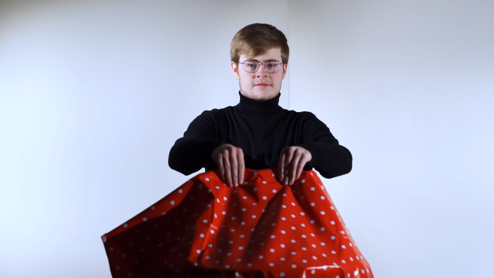

This is my directing section. Here you can find all of the videos that I have directed. So far, every video I have ever directed has also been written, produced and edited by me. Hopefully, these videos will give you an idea of my style and how I develop it in the future. I also hope to include behind the scenes footage, interviews with actors and director’s commentary’s in the future.
This is the first advert I have made. When I was given the brief to make an advert I was also given a list of companies. I immediately decided I wanted to do Kit Kat as the idea came to me instantly. This was a great video to film and one of my favourite pieces that I’ve made.
This video is a short I made as part of my university application process. I was given the vague theme of “Incredible” and as I struggled to come up with an idea I decided to let my writer’s block guide me. With the very limited time of two weeks to plan, film and edit I realised I had to take a very D.I.Y approach. For this reason, every part of the video was done by me including cinematography, sound design and editing.
This is the first video I ever made. I have this here less to show off my ability, but rather to show how I have developed as a filmmaker and remind me of my humble beginnings.
In this section you can find some of the scripts I have written, including the ones for the videos that can be found on this website. Currently I have two more scripts in development which will appear in the next month.
Hello. My name is Neil Dudman Robb, I am young student filmmaker and founder of N.A.D.R Productions. For as long as I can remember I have had an intense passion for cinema and television. For years I have dreamed of being able to make films of my own and share my passion with the world. N.A.D.R is my first step into making this dream into a reality. Currently I study HND television at Edinburgh College and I hope to be moving onto university in August 2019. Here on this site you can find some examples of my work as well as keep updated about upcoming projects of mine. I hope to add more regularly. So, welcome and enjoy your stay.
